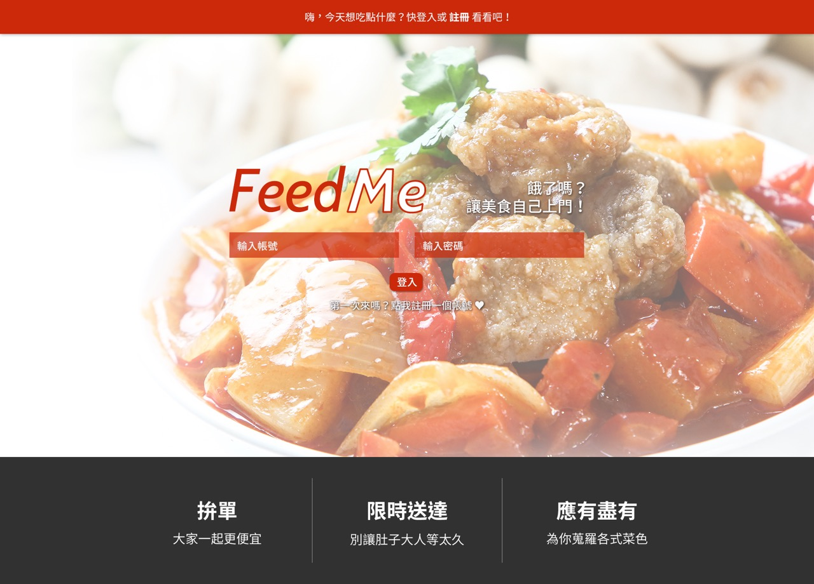
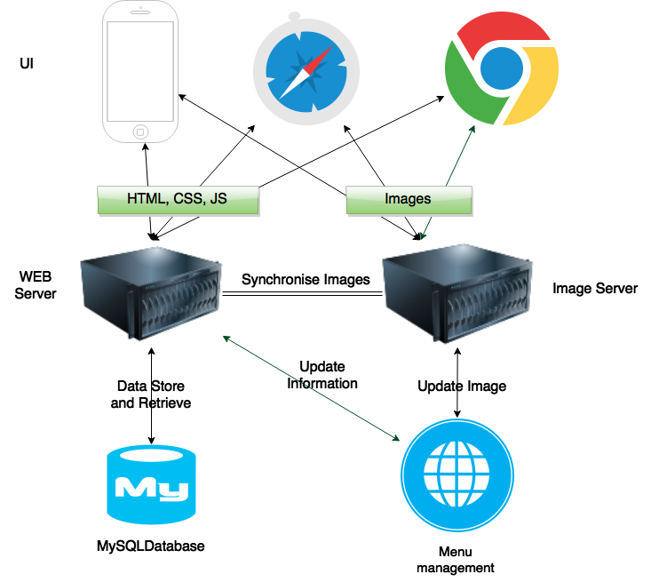

“
”Week 12, More to think about the project
Planning in long range is critical when start a market focused project. Considering the target and what we have done, the following things should be considered in next stage:
- message management and pushing between different devices and clients.
- multi-clients development.
- payment using visa and PayPal
- the account settlement with restaurants
- improve the data and pictures loading speed
- improve the production of team member to achieve the goal above.

From the experience of past 10 week cooperation for the project, I believe we learned how to work in a team and understood what the project want from them. It is a good start considering what we have done. We have the confident achieve the goal through there are a lot of thing needed to do.
“
”Week 11, Don't let UI obstacle your progress
Our team is very worry about the system UI development since there is no one has the experience of designing. More than that, because what we do is to create a UI based software, they don’t know how to develop the software without a visual UI. I tried to designed a UI and it is considered to be failure. The UI is an obstacle of us to do further job.
To make the work going without UI, I decompose the UI into fragments and layout what data to required to display on the fragment. It works for Jun chen. He programs the web application based on these fragments and spend only three days (six hours) to moving his application to the new UI.

For the UI design, we need help from others. Posting advertisement in art school of ANU, there is no response in a week. Calling friends who have the experience of design UI, they are too busy for their work. Finally, we get response from freelancer.com, and the freelancer spend 3 days to design the UI. Our team confirm the UI work after four times editing.
One week left only when we finally get the UI design. Considering no people is proficient the CSS and JavaScript, I take the task and spend three days to implement the UI. And make some modification in next four days.
“
”Week 10, Listen from your customer
There are a lot of cool technics designed for kinds of purpose, such as Mongodb, Hadoop, Spark, Hbase etc. IT students are interested in using these cool technics to build powerful and awesome product from. However, these advanced technics are developed for specific situations, such as big data analysis, quick data retrieve, or pattern learning from big data. One trap of IT project is to focus on computer technics too much to listen to customers.
IT engineers love to learn new technics, like challenges, and desire to make perfect software. However, most of IT projects are developed to solve or improve routine works.
However, IT engineer doesn’t like to talking with non-IT customers.

We sometime forget the purpose of the IT sometime. The IT is invented to convenient people’s live, to improve people’s production in work and to build a better world. A good project creates value to public and creates profit to its entity. What we do now on feedme project is to serve people who book dishes on line and improve restaurants services.
Besides the requirements from customer, your project team have to process kinds of issues such as law of enterprise, law of security, cooperation with other entities etc. when you start a business based on your project.
For market oriented project, we must understand customers’ requirement before making plan. We make survey to restaurants and public before the project. Talking to customers is the best way to know your customer.
Fortunately, Jack is very good at talking business with restaurant, and he keeps connect with restaurant throughout the project. Jack does great work on this. He contacts lawyer to consult of setup business, insurance for delivery guys and food safe, payment and tax issues. He collects information from his channel, and shares with us. All of other team member also learn a lot from his work.
“
”Week 9, Manage your team, learn from your team
In the period of week 3 to week 7, we don’t really have a team leader because the changed project is easy and every one believes they understand their role. Kate manage and follow each one’s work at the project meeting. However, we got few achievement after four weeks. The feedme project goes in troubles. People do their work individually. The components developed by us are totally not work when put them together. The plan has no detail and is not executable. Because of lacking experience, the project goes in troubles.
To make the project well planed and managed, I take the position of team leader to pull and push the project forward. The Trello helps me a lot to make and execute the plan. Following the system design, I decompose services into specific tasks with detail description. To let team member really understand their tasks, I keep talking them all the time. And I demonstrate to my team member about how their tasks contribute to the whole project. That is really a tough work.

Moreover, I have to think forward of the project and generate new tasks to assign them to team members. My routine job is to push every one work forward, pull their work to right direction, and adjust their work effort by estimating their work abilities.
This experience teaches me a lot on managing a team. Especially, when the members of team comes from my classmate and they are weak on programing, database and Linux etc. skills.
“
”Week 8, Design a system? Not a easy work
Because I am the only one who worked as software engineer at enterprise, I take the responsibility of designing the system. It is a online ordering and delivery system, and it seams very easy to handle. But when I step into the detail, more and more tough jobs are waiting me to solve.
System structure design I make two assumptions before the system structure designing:
- Support ten thousand restaurants in future.
- At lease one hundred dishes in a restaurant. And the size of each dish photo is about 0.5MB.
- There are system access peak at moon and 5:00pm to 7:00pm of lunch and dinner.
- Flow and convenient usage to view restaurants, dishes in photos and text.
- System will be extended and undertake more function, such as sharing delicious food by taking photos.
- Multi devices.
- Multi client.
Based on those assumptions, following design features should be considered:
- At least 50GB volume for pictures storage is required.
- At least 1,000 concurrent service accessing in peak time supports.
- Web explorer, iOS devices, Android devices and Tablet Devices support.

Because it is a business system, reliable, stable, response time and extendable features are considered. Solutions show as bellow:
- At least 50GB volume for pictures storage is required.
- At least 1,000 concurrent service accessing in peak time supports.
- Web explorer, iOS devices, Android devices and Tablet Devices support.
- Caching data on server to provide quick response time and good quality of services.
- Using mongo DB to manage pictures.
- Using MySQL to manage restaurants, dishes, orders and payment etc data.
- Using RESTful API to provides data accessing from clients.
- Using rich clients application to handle customers operation.
API and application design Based on the structure introduced above, we build a web host server, MySQL database and program restaurants and dishes CRUD APIs. Pictures are stored on server current, we will transfer the pictures storage to mongo DB in next stage.
The system provides four main distinctive services: Group delivery, hot dishes suggestion and find food by location
In project meeting, we talked a lot services. However, how to implement them using code? We abstract models and actions from the services, define the API of to operate data on remote server and define the operation on client applications.
“
”Back Door!!! How to check whether there are back doors in software? Code Review? It's Technic Trust issue, and it will become a obstruction of technic development.
Today I ready the report from Baidu News that American technology giant IBM will allow Chinese government access its software codes. Chinese government officials will be able to check the codes in the cleanroom to make sure they conform to Chinese national information security policies.

As a technical person in this industry, I quite understand it is a hard decision for IBM. For getting an entry into the billion-dollar government procurement market in China, this company had to make such a move. It also shows that IBM is under pressure to sustain it business growth in China.
Actually, in resent years, oversee tech majors are facing huge trust crisis of Internet security in China.
Stem from national security consideration, Chinese government has already begin to control the procurement of network products from foreign company, which means almost all of these world-renowned tech companies has to find their way to re-gain the trust of Chinese government to avoid being kick out from this billion-dollar market.

I think these foreign tech companies should try to build partnerships with local firms and transfer technologies to Chinese companies in order to gain long-term growth in China. IBM has already been moving in that direction, which means it can maintain its market in China better than its competitors.
“
”A Good IT project does not means a good business in furture. More things required to make project becoming business.
I belive that we forgot something after learning from other teams’ representations of the drone delivery system project.

Firstly, a project should have a target which is customers’ requirements. The target leads us to work for it. the target constrained by its scope, which tell us what should be done and what should no be considered. In this project, we forget its scope and add more and more functions, which are unnecessary and miss leading us to wrong direction.
However, with these function added, the project becomes especially difficult to implement in practice. Most functions are out of imagination and can only exist on paper. This is the project manager’s responsibility, who does not make good decision, not control the increasing of functions, and miss the project’s scope. As a monitor and evaluator, I have the responsibility to find problem from the evaluation and give advice to project manager. But I am not find the problem, or I don’t have opportunity to discuss and give advice. There are several reasons for the problems.

Secondly, culture gape and understanding of language. People with different culture will focus on different parts of project. Such as some people prefer to think solution in overall aspects, while others will focus on a point and go further about this point. Project worked in this way may not well connected between each topic. Secondly, there is not enough meetings. Because it is difficult to find available time when all of people is free, some people may not participate in the meeting, and their parts are not well discussed. More importantly, individual’s work may not go in right direction if we do not work together for a long time slot. Working together in a place may greatly improve team work.
Thirdly, not just follow, participate in team work by giving your ideas and opinions. Creative works and results of team project come from team members contributes. Idea and knowledge collision inspire new idea and knowledge. Besides, feed backs from team members can improve your productivity. These problems have to be overcome in next project.
“
”Week 7, Technic trial
We get two restaurants’ support who will provide us their materials of restaurants and dishes. And they are glade to participate our project to contributes ideas of packaging and delivery. With restaurants’s help, Yiyuan Zhou and Hongyu Gao will work on improving business plan to make it mature enough to get cooperation with more restaurant and third parties. Danyang Li builts a RESFful service prototype based on spring boot. I create a UI prototype design.
Research on distributed images storage and retrieve using javascript and static html from RESTful service. And implement a prototype using code.
There is a technology issues that we should consider now to make the system flexible enough to support larg scale of pictures. The solution we got is: 1. save images on other machine/directory which is independent to current server. 2. save a URL and compiled unique name of image to database. 3. explorer will retrieve image using the URL and name using RESTful image api which provided by image hosted server.
“
”Week 6, Step in business oriented project
This is the second times of tutor meeting. We introduced our team member’s ability estimate, role assignment, and cooperation mechanism between team members. Two tables below are what we have done last week and next week’s plan.
Work have done :
Name Tasks finished Jack Law Consulting, market research Linda Setup Server, Architecture of software Jevy Database schema draft and UI draft. Architecture of software. Jason Client and data transaction between client and server Kate Administrate team and resources
Plan of next week:
Name Task of next week Jack Market plan Linda Services and API Jevy Improve database schema along services, Improve UI Jason Mobile device UI and API along services Kate Administrate and market, services documents There are two problem raised by Dr. Flint that we should take care after tutor meeting.
Firstly, there should be a well defined plan for the whole project which estimates the confident of the project. For example, this project have constrains such as time, technologies, human resources, marketing. We can make project plan after understanding those constrains. The plan may change when we really work on the project for a while. The re-estimate step will help us improve the plan, and make us have more confident for the project. Secondly, system design should start from class diagrams other than tables relations of database. A well designed a system can greatly save people time when implement it.
“
”Week 5, New light from new project
We decided to do some research on the food booking and delivery project after team meeting. I and Jun chen create a customer survey sheet on google form. Danyang Li, Yiyuan Zhou and Hongyu Gao make plan of how and what to talking with manager of restaurants. The survey result is quit good. There are 24 for 30 customer want and like a better food delivery service. 20 of 25 restaurants like to participate this project. The restaurants who don’t have deliver team desire it to improve their business. From the survey, we found that what the customers really need is a good delivery services, and restaurants expect to attract more customer by providing take away and deliver services. But operate a deliver service (especially some small restaurants) spend much than what they can afford. Besides these valuable requirements, good parts of the project are that we can start the business and get revenue quickly, all partners can participate the project and contribute their ability to improve the business.
We create a business canvas to find what we can do for restaurants and public, what and how can we get from the project. We get permission from our tutor to change the Telecom Business Intelligence project to the Foodie project. Considering this is a totally business oriented project, we re-estimate partner’s abilities and make adjustment. Yiyuan Zhou focuses on market development and take the responsibility of managing the project. Danyang Li is still going to develop server of services. Jun Chen will focus on transaction of data from server to UI and iOS UI development. Hongyu Gao will work as administrator of the project to push our job and assistant Yiyuan Zhou to development market. I will work on system designing with Danyang Li, platform for the system, database, and web UI. Danyang Li and I also listen from Yiyuan Zhou for customer requirements to adjust the design of system. Team member responsibilities allocation.
Name Responsibility Jack Market, sale, law and team management Linda Server application and RESTful API Jevy Database , UI, project technology architecture and market Jason RESTful API and mobile device Kate Market, sale and Administrator of team
“
”Slow to deliver? Spam mails? But I LOVE using email
Through email is not the most efficient communication way, it is the most popular way to communicate in people. Ten millions emails fly over sky, transfer through ocean, or rush in the cables to go to their destination everyday.

I believe it is the cheapest way to delivery a message to a mount of people. Comparing to mobile communication, replies of email require patient of initiator. It may need minutes, hours, days, or it never get reply. However, I like to write a email or reply a email comparing to telecom call. The waiting time allow me to organize my mind entiely before write it down.
By the way, my email address is jevy.wangfei@gmail.com.
“
”A Good IT project does not means a good business in furture. More things required to make project becoming business.

We take the first tutor meeting this Monday about COMP8600 Project (Telecom Business intelligence). The meeting exposes our problems in doing project and leads us to focus on market. The four concepts proposed by Dr. Flint are key factors guiding us to success:
-
A software should be valuable for some people or public. On other hand, market means people requirements from which people can get benefit, save time or money, or get convenient. Market is essential for a project, because the goal of software is to create value to those people. When we launch a project, we must estimate its value firstly. Meanwhile, a successful project should create value for ourselves.
-
The functions of software should come from requirements. Project manager and project team should have a well defined requirements and study it carefully. If there is no such requirement(such as setup project), team should discuss or make survey with customers.
-
Project management is a tool to estimate and build confident of the project. In the “estimate–plan–execute-re-estimate” loop, project management tool helps project manager to estimate current situation, improve project plan and finally improve the confident of the project. Remember, all what we do on project management is to make us more confident for the project. Documents in project management is to help us to finished project, it can’t be a burden. For small project, document is not necessary.
-
Correctly estimate team members’ ability and allocate work. Market focused IT project includes kinds of technic and non-technic works. Right people doing right work keeps every one participated in the project and contributes their ability to intelligence.

Review the four key factors, I and partners find some deficiencies. The Telecom Business Intelligence project focuses on telecom data analysis. Because of confidential and less of cooperation with telecom companies, we can’t get customers’ requirements. Also, the industry this project focused is unfamiliar for my partners. They don’t understand how the raw data is generated, what to do that data format and what customers want from our system. It is knowledge and technology constrains. Besides, the project focuses on technologies too much that two of my partners may not participate in this project in deep because they are not good at programming. I greatly understand the shortage of human resources, telecom knowledge and technology resources.
Meanwhile, Danyang Li, Yiyuan Zhou and I are considering to setup a online food booking and delivery system as innovation project on summary vacation. Why not try it now? We have enough technology guys to programing the system. And the two partners can contribute their effort and intelligence on market. It is what they good at.

“
”Week 4, Business plight
We take the first tutor meeting this Monday. The meeting exposes our problems in doing project and leads us to focus on market. The four concepts proposed by Dr. Flint are key factors guiding us to success:
- A software should be valuable for some people or public. On other hand, market means people requirements from which people can get benefit, save time or money, or get convenient. Market is essential for a project, because the goal of software is to create value to those people. When we launch a project, we must estimate its value firstly. Meanwhile, a successful project should create value for ourselves.
- The functions of software should come from requirements. Project manager and project team should have a well defined requirements and study it carefully. If there is no such requirement(such as setup project), team should discuss or make survey with customers.
- Project management is a tool to estimate and build confident of the project. In the “estimate–plan–execute-re-estimate” loop, project management tool helps project manager to estimate current situation, improve project plan and finally improve the confident of the project. Remember, all what we do on project management is to make us more confident for the project. Documents in project management is to help us to finished project, it can’t be a burden. For small project, document is not necessary. 4.Correctly estimate team members’ ability and allocate work. Market focused IT project includes kinds of technic and non-technic works. Right people doing right work keeps every one participated in the project and contributes their ability to intelligence.
Review the four key factors, I and partners find some deficiencies. The Telecom Business Intelligence project focuses on telecom data analysis. Because of confidential and less of cooperation with telecom companies, we can’t get customers’ requirements. Also, the industry this project focused is unfamiliar for my partners. They don’t understand how the raw data is generated, what to do that data format and what customers want from our system. It is knowledge and technology constrains. Besides, the project focuses on technologies too much that two of my partners may not participate in this project in deep because they are not good at programming. I greatly understand the shortage of human resources, telecom knowledge and technology resources.
Meanwhile, Danyang Li, Yiyuan Zhou and I are considering to setup a online food booking and delivery system as innovation project on summary vacation. Why not try it now? We have enough technology guys to programing the system. And the two partners can contribute their effort and intelligence on market. It is what they good at.
“
”Week 3, Launch Telecom Business Intelligence Project
I worked in telecom industry for three years as IT engineer, project manager and Billing expert. The pains of customers’ report requirements and the limitation of our company’s telecom business intelligence system inspire me to create a easy to use, easy to maintainance and affortable data analysis system for small and medium telecom companies. The vision is that the system is easy enough which can be installed and maintained part-timely by IT engineer, the configuration of adding new data analysis functions is easy enough that no data analysis experts required, and the system is free for basic data analysis requirements and buy customerized function just as shopping online.
Because I clearly know what current telecom companies expectation and have experience to manage a technic project, I am very confident that the project is valuable enough to attract customers and investors. Meanwhile, Some classmates are interested in this project after talking the project with them. We create a team and begin to start the work.
Considering the situation of telecom industry and data analysis requirements, the structure of the system is divided into three parts: UI, Server and Data analysis Engine.
Data Analysis Engine reads data from database or data file and do data static, data analysis, and data learning. The engine will be written by Scala language, run on Spark Map/Reduce Engine and process data on Hadoop HDFS (processing managed by Hadoop YARN). Data analysis result will be written on MongoDB.
- Server reads processed data from MongoDB, transforms it to JSON format and finally provides JSON data as RESTful services.
- UI includes Web, iOS and Android platform. It uses javascript to acquire RESTful services from server and show data and chart on UI.
So good so far. We do researches on all of technologies mentioned above. Danyang Li constructs a proto server to provide RESTful login services. Jun Chen writes a first Spark map/reduce program using Scala. Hongyu Gao and Yiyuan Zhou design a proto UI of web and a logo of project. I setup a distributed Spark running environment on Amazon virtual servers and create auto-deploy shell script to get source code from github, compile and renew service on Amazon virtual servers. In group discussion, we also get a name “Daramid” for the project. The name comes from Data Pyramid which means extract valuable and well organized data from large scale raw data.
“
”Perform your real characters to interviewer, don't copy answers from templates.
Through email is not the most efficient communication way, it is the most popular way to communicate in people. Ten The interview is often the most daunting part of the English communication for many international students who come from non- English speaking country.

Ironically, most of them perform poorly in the speaking section in the interview because they over-prepare for it. The “error-free” templates and picture-perfect “model answers” committed to memory make the entire preparation process a strategic failure. From my perspective, the interviewer does not only just wants to get a “correct answer” but also intend to examine the interviewer’s English proficiency.

Personal preferences may vary when it comes to words, pronunciation and expression, bull all interviewers value spontaneity. It is fairly easy for them to spot thoughtless spouting of prepared answers, because there are few or no nature pauses in answers given by rote. In addition, candidates tend to hesitate noticeably when the interviewers ask for further elaboration on a prepared response. This dramatic hesitation seriously erodes the candidate’s credibility in proving English proficiency, which often results in a bad impression. As an international student from a non-English-speaking country, I am confident of my technical skills in my procession. However, the ability of English communication is the passport to get a job in an English-speaking country. Language ability cannot be achieved overnight. It needs time and energy.

It is true that speaking a second language is partly a talent, but it is mostly a skill. I believe it will, like any other sill, improve with practical guidance and continued practice.
“
”I begin my study at ANU. ANU is a great university.
“
”I get marriage today (Feb. 10, 2014). A new life style is starting.
I was enrolled by ANU at the 30th of Junary 2014. It's the Spring Day of China. Happy Spring Day. Happy ending of 2013. Good start of 2014.
“
”The Power FTP is a tool which is used to put files to distributed system which would have hundreds or thousand servers.
I create a project named PowerFTP on github. Everyone can join me if you like this project.
“
”Could the aged can operation the iPhone? Could we follow the way of thinking of the aged and children to design products?
I planed to buy a old style cell phone for my grandpa, but finally I buy a smart phone (based on Android) because it is so cheap that I can't reject it.
But I am in problems after giving the phone to my grandpa. He even don't know how to slide and touch the screan.
After showing him about the how to dial a number and recept a phone severial times, he gradually understands how to let the phone work. However, he can't operate the phone smoothly and can't handle the applications besides the basic function of the phone -- calling.
On other sides, this phennomenon of the aged contacting the smart phone (based on Anfroid) at the first times is the same with children, even they could play with the smartphone after touch the screan serverial times. They don't know how to operation the smart phone by sliding and touching at first. They have no idear about the exceptions which always happend on Android system based smartphone.
But there is an exception. Children can operation the iPhone smoothly because they know to press the big "HOME" button to go back the home page. Could the aged can operation the iPhone smoothly?
My sweet came to my home, the kids (my nephew and her neice) try to kiss her. Sweet.
This is the first post on this new blog. I will update all of the messages about me here.
Besides, I also displayed my design and picture in this blog. I am very interested in computer technology very much, and I hope to post the laterest information here.
Also, I am an amateur photographer. I will display the most beautiful pictures here.
Welcome to my blog, you can contact me Here, Or send a message to me by email
“
”Personal State, Applying Master Degree in Australian Universty.
My name is Fei Wang. I graduated from Hefei University of Technology (one national key university of China) in 2010. In the past three years, I worked in the global technology service department of ZTE co., LTD.
I am very interested in large scale data process and familiar with some excellent large-scale data process solutions such as hadoop and NoSQL. I want to make an in-deep research on it. In order to further improve my professional capabilities, I plan to go abroad for further study.
Please following the link to know me. Fei Wang’s CV